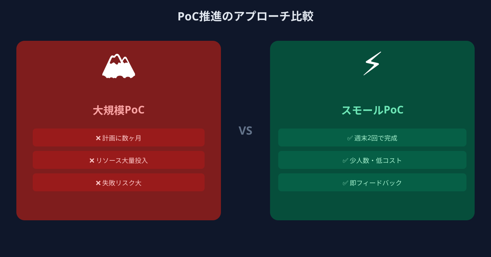
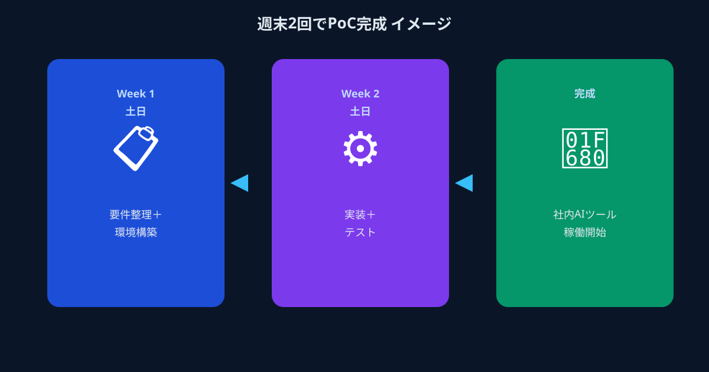

なぜAI活用は「PoC止まり」になるのか
IT調査会社が企業のAI導入実態を継続的に調査するなかで、繰り返し浮かび上がるのが「検討はしているが本番運用に至らない」という課題です。2026年においても、生成AIの企業活用は「意欲は高いが、成果は出ていない」という状況が多くの組織で続いています。
この停滞の構造を整理すると、おおむね次のパターンに集約されます。まず、AIベンダーや受託開発会社に相談を持ちかける。するとフルスペックの要件定義と大きな予算提案が戻ってきて、社内承認が通らない。あるいは承認が通っても、開発に数か月かかる間に現場の課題が変化してしまい、納品物が実態に合わなくなる。最終的に「導入したが定着しなかった」という結果が残ります。
この問題の核心は、「試す単位が大きすぎる」ことにあります。フルスペックで完璧なものを一度に作ろうとするから、時間とコストがかかり、現場の変化についていけなくなる。PoC（概念実証）と呼んでいながら、その規模が「小さな本番」になってしまっているケースが非常に多いのです。
- 大手ベンダーへの問い合わせ → 大規模提案 → 社内承認が通らない
- 承認が通っても開発に3〜6か月 → 完成時には要件が変わっている
- 試験運用まで漕ぎ着けても「現場に刺さらない」で終了
前に進む会社がやっていること──「試す単位」を小さくする

一方、AI活用を着実に前進させている企業を見ると、共通する行動原理があります。それは「小さく試して、速く学ぶ」という考え方の徹底です。ここでいう「小さく」とは、機能を絞ること、期間を短くすること、そして投資コストを抑えることの三つを同時に意味します。
具体的には、「まず一つの業務フローだけに絞った最小構成のツールを作る」というアプローチです。全社横断の問い合わせ対応AIを構築しようとするのではなく、「経理部への勤怠確認の問い合わせだけ自動化する」という単一機能のBotを2週間で試す。うまくいけば拡張し、うまくいかなければ別のアプローチを試す。このサイクルを速く回すことが、AI活用を前進させる本質です。
このアプローチが機能する前提には、「小さなPoCを低コスト・短期間で実現できる手段がある」ことが必要です。そこで注目されているのが、週末や短期間で動けるAI実装経験を持つエンジニアへのスポット発注です。
スモールPoCを成功させるための「週末スポット発注」活用術

ANKENのマイクロ・マッチングは、まさにこの「小さく試す」を実現するための仕組みです。メガベンチャーや大手IT企業に在籍しながら週末・平日夜に副業として動けるフルスタックエンジニアが、タスク単位・スポット単位で発注に応じます。
ポイント① タスクを「動くもの1つ」に絞り込む
スポット発注を活かすには、依頼内容をできる限り一つのアウトプットに絞ることが重要です。「ChatGPT APIを使って、Slackに投稿された質問に自動返答するBotのプロトタイプを作ってほしい」という依頼は、明確で実現可能です。
一方で「AIを使って業務効率化をしてほしい」という依頼は、スコープが広すぎて期間内に完結しません。スポット発注に向いているのは、「週末2日間で動くものを1つ届けてほしい」というシンプルな要件です。そのために必要なのは、依頼前に「最初の一歩として何が動けば成功か」を自社内で合意しておくことです。
ポイント② AI実装経験者に直接つながる
ANKENに登録しているエンジニアは、LLM API（OpenAI・Anthropic・Google）、RAG（Retrieval-Augmented Generation）、Agentフレームワーク（LangChain・LlamaIndex等）を実務で扱った経験を持つ人材が中心です。
受託会社を挟まないため、「どのAPIが用途に合うか」「コストをどう抑えるか」「このアーキテクチャで拡張はできるか」といった技術的な判断を、依頼の段階からリアルタイムに相談できます。これは「要件を固めてから外注する」という従来の発注プロセスとは根本的に異なる進め方で、特に技術的な知見が社内に少ない企業にとって大きなメリットになります。
ポイント③ 「失敗してもいい」コストで回す
スモールPoCの最大の価値は、失敗のコストを小さく抑えられることです。大手受託開発に数百万円を払った後に「やはり現場に合わなかった」となれば、その損失は深刻です。しかし、週末2日分のスポット発注で試したプロトタイプが現場に合わなければ、「別の切り口で試そう」とすぐに方針を変えられます。
ANKENでは固定費ゼロ・低単価からのスポット発注が可能です。「まず試す」「結果を見て判断する」というサイクルを、財務的なリスクなく回し続けられることが、AI活用を継続的に前進させる鍵です。「失敗」を繰り返しながら学ぶことがイノベーションの本質だとすれば、その失敗を安く済ませられる仕組みは戦略的な資産です。
スモールPoC成功事例：週末2回で動いた社内AIツール
理論ではなく、実際にどう使われているかを見てみましょう。
従業員50名規模のスタートアップで、人事担当者が毎日10〜15件の社内問い合わせ（有給取得ルール、経費精算フロー等）への対応に追われていた。Notionで管理していた社内規定ドキュメントをRAGで読み込み、Slackから質問できるBotを、週末2回・計4日間のスポット依頼で構築。人事担当者の問い合わせ対応工数が週あたり約6時間削減された。
Webマーケティング支援会社で、毎週クライアント向けに作成する分析レポートのフォーマット化と文章生成部分をAI化したいというニーズがあった。Google Analyticsのエクスポートデータを入力すると、所定のテンプレートに沿ったレポート草稿をLLMが生成するPythonスクリプトを、土曜日の1日稼働で完成。翌週から実運用が開始できた。
製造業の情報システム部門が、数百ページの技術仕様書を現場担当者が素早く参照できるようにしたいと考えていた。大手システムインテグレーターへの問い合わせで出てきた見積もりは数百万円だったが、ANKENでのスポット依頼では数万円台でRAGベースの検索プロトタイプが完成。まず試して、良ければ本番化を検討するというアプローチが取れた。
まとめ──AI活用の第一歩は「大きく構えないこと」
AIで業務を変えたいと思っていながら、なかなか一歩が踏み出せない組織の多くは、「完璧なものを一度に作ろうとする」という罠に陥っています。しかし実際にAI活用を前進させている企業は、最初から完璧を目指していません。小さく始め、速く試し、学びながらスケールする。このサイクルを回し続けることが、競合との差を生んでいます。
その「小さく試す」を低コスト・短期間で実現するための手段として、週末・スポットで動けるAI実装経験者への発注は非常に合理的な選択です。ANKENは、そのマッチングをシンプルに実現するための仕組みです。「まず動くものを1つ作ってみたい」という段階から、ぜひご相談ください。
AIに強いエンジニアに、週末・短期でスポット発注。固定費ゼロ・低単価で「動くもの」を最速で手に入れましょう。
👉 週末エンジニアにAI開発をスポット依頼してみる登録費用・固定費ゼロ。相談だけでも大歓迎です。